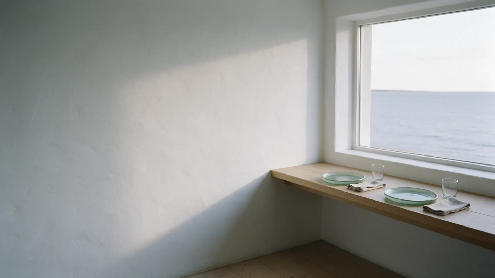
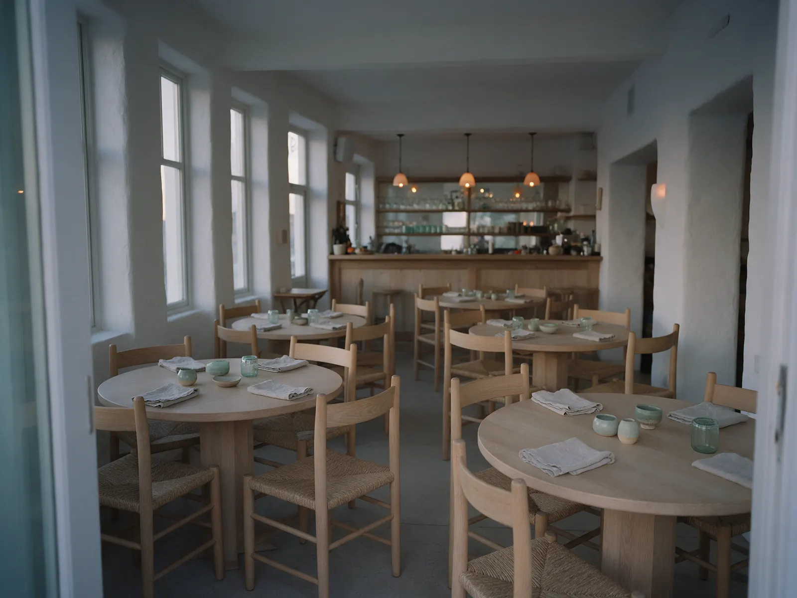
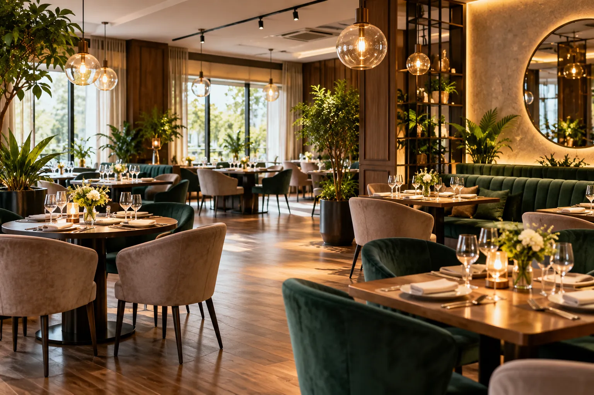

Starters
- Cured fish with lemonprice on requestThin slices, olive oil, herbs, flaky salt.
- Seasonal soupprice on requestMade from what is fresh this week. Ask for today's.
- Grilled bread and dipsprice on requestWarm bread, two dips of the day, olives.

Dishes, Happy Hour and this week's events in one place. Loads fast on your phone.

A PDF on a small screen, with no prices or no descriptions. You still do not know what to order.
Happy Hour, a music evening, a special dish: you hear about it from the waiter, when it is too late to plan.
You look for the address standing outside, on one bar of signal. The page takes a minute to open.
The menu comes first, with descriptions and prices. Events and Happy Hour are all in one place. Address, hours and map are one tap away.
Happy Hour and events are posted here by the restaurant, so the information is never more than a week old.

The dining room by day and by evening. Pick the table you want when you book.
Send the date, the time and the number of guests. Prefer to talk? Call us.
We reply during opening hours. If your day is full, we offer the nearest free evening.